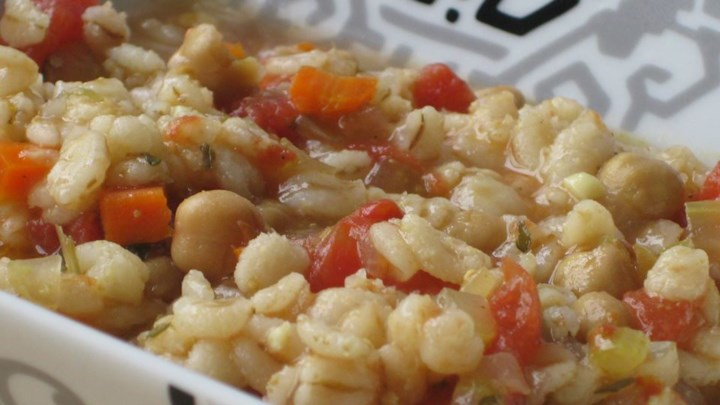

Vegetable Barley Soup
Easy to make and delicious. Vegetable broth, barley, and lots of veggies make this soup hearty and filling. I use and recommend organic products. Please add a review if you make it. Enjoy!
Time: 1h 45m, 8 Servings
- 2 quarts vegetable broth
- 1 cup uncooked barley
- 2 large carrots, chopped
- 2 stalks celery, chopped
- 1 (14.5 ounce) can diced tomatoes with juice
- 1 zucchini, chopped
- 1 (15 ounce) can garbanzo beans, drained
- 1 onion, chopped
- 3 bay leaves
- 1 teaspoon garlic powder
- 1 teaspoon white sugar
- 1 teaspoon salt
- 1/2 teaspoon ground black pepper
- 1 teaspoon dried parsley
- 1 teaspoon curry powder
- 1 teaspoon paprika
- 1 teaspoon Worcestershire sauce
- Pour the vegetable broth into a large pot. Add the barley, carrots, celery, tomatoes, zucchini, garbanzo beans, onion, and bay leaves. Season with garlic powder, sugar, salt, pepper, parsley, curry powder, paprika, and Worcestershire sauce. Bring to a boil, then cover and simmer over medium-low heat for 90 minutes. The soup will be very thick. You may adjust by adding more broth or less barley if desired. Remove bay leaves before serving.